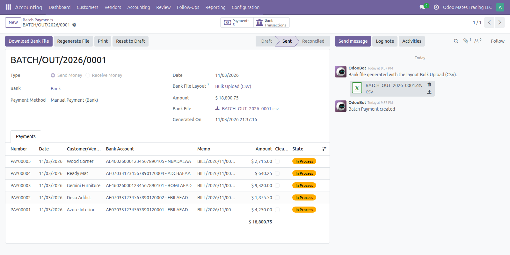
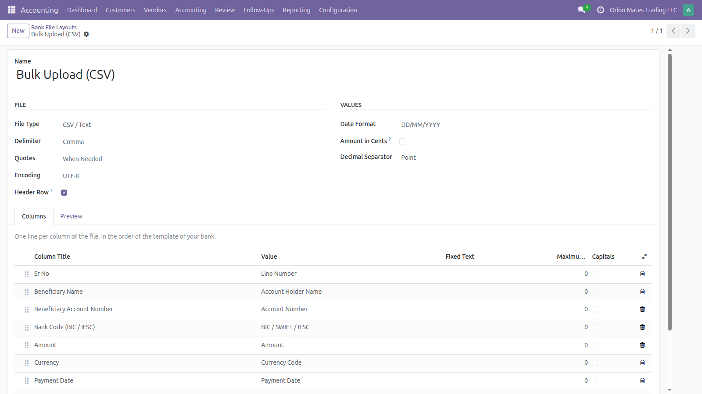
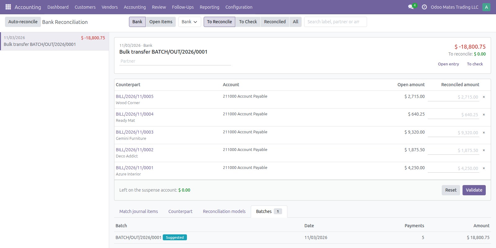

Group the payments of a bank journal in a batch, send your bank one upload file, and reconcile the single transaction on your statement with every payment of the batch.
A vendor payment run or a deposit of customer cheques, from the bills to the bank statement.
Tick Create a Batch in Register Payment, use Create Batch on the selected payments, or add payments on the batch.
Draft payments are posted, the bank file is generated and attached, and the payments are locked.
Download the file for the bulk upload of your bank, or print the payment list or deposit slip.
One bank transaction clears the batch, suggested from its reference or amount.
Batch Payments under Vendors and Batch Deposits under Customers, numbered in their own sequences. A sent batch keeps its amounts as they went to the bank.

A sent batch: its payments, the total and the bank file.
Design the layout from the settings, with no code. Each bank journal has its default layout, and a preview shows the file with a sample payment.
Delimiter, quotes, encoding, header row, date format, decimal separator, or amounts in cents.
Each column has its title, a maximum length and capitals, in the order of the template of your bank.
Account holder, account number, BIC / SWIFT / IFSC, bank name, amount, currency, memo, partner details, or a fixed text.

A bank file layout: the file settings and the columns.
A Batches tab in the reconciliation screen lists the sent batches of that bank going in the direction of the transaction.
From the batch reference in the label, or from the amount when nothing else has it. Tied batches are never guessed.
With automatic reconciliation on, a transaction with both the reference and the amount of a batch is reconciled for you.
Remove a payment from the proposal before validating. Undoing a reconciliation puts the batch back to sent.

One bank transaction matched with the five payments of a batch.
What to expect before you install.
Questions? Odoo Mates · odoomates@gmail.com